import matplotlib.pyplot as plt
import numpy as np
import pandas as pd
%matplotlib inlinematplotlib API primer
- Figures and subplots
- adjusting the spacing around subplots
- colors, markers and line styles
- ticks, labels, and legends
- adding legends
- annotation and drawing on a subplot
- saving plots to file
- matplotlib configuration
plotting with pandas and seaborn
- line plots
- Bar plots
- Histogram and density plots
- Scatter or Point plots
- Facet Grids and Categorical Data
Into matplotlib
data = np.arange(10)
dataarray([0, 1, 2, 3, 4, 5, 6, 7, 8, 9])plt.plot(data)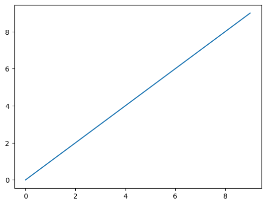
Figures and subplots
fig = plt.figure()
plt.show()
# 2, 2 means 4 sub-plots will be created
# % matplotlib
ax1 = fig.add_subplot(2, 2, 1)ax2 = fig.add_subplot(2, 2, 2)
ax3 = fig.add_subplot(2, 2, 3)fig = plt.figure()
ax1 = fig.add_subplot(2, 2, 1)
ax2 = fig.add_subplot(2, 2, 2)
ax3 = fig.add_subplot(2, 2, 3)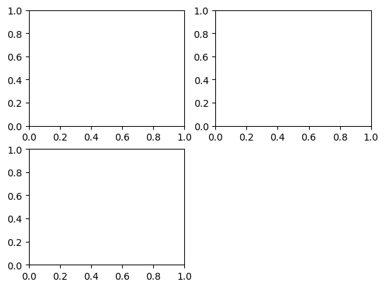
%matplotlib notebook
ax3.plot(np.random.standard_normal(50).cumsum(),
color = 'black', linestyle= 'dashed')ax3.plot(np.random.standard_normal(50).cumsum(),
color = 'black', linestyle = 'dashed');
help(plt)ax1.hist(np.random.standard_normal(100), bins = 20,
color = 'black', alpha = 0)
ax2.scatter(np.arange(30), np.arange(30) + 3 * np.random.standard_normal(30));! pip install ipymplfig, axes = plt.subplots(2,3)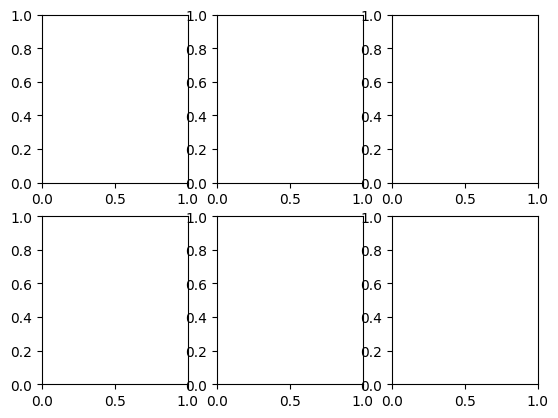
axesarray([[<Axes: >, <Axes: >, <Axes: >],
[<Axes: >, <Axes: >, <Axes: >]], dtype=object)Adjusting spacing around subplots
subplots_adjust(left= None, bottom= None,
right= None, top= None,
wpace = None, hspace= None);fig, axes = plt.subplots(2, 2, sharex = True, sharey = True)
for i in range(2):
for j in range(2):
axes[1, j].hist(np.random.standard_normal(500),
bins = 50, color = 'black', alpha = 0.5)
fig.subplots_adjust(wspace= 0, hspace= 0)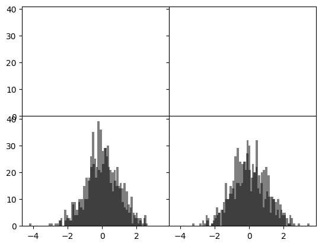
ax.plot(x, y, linestyle = '--', color = 'green')ax = fig.add_subplot()
ax.plot(np.random.standard_normal(30).cumsum(),
color = 'black', linestyle = 'dashed', marker= 'o' )fig = plt.figure()
ax = fig.add_subplot()
data = np.random.standard_normal(30).cumsum()
ax.plot(data, color = 'black', linestyle = 'dashed',
label = 'Default')
ax.plot(data, color = 'black', linestyle = 'dashed',
drawstyle= 'steps-post', label= 'steps-post')
ax.legend()<matplotlib.legend.Legend at 0x205861b2460>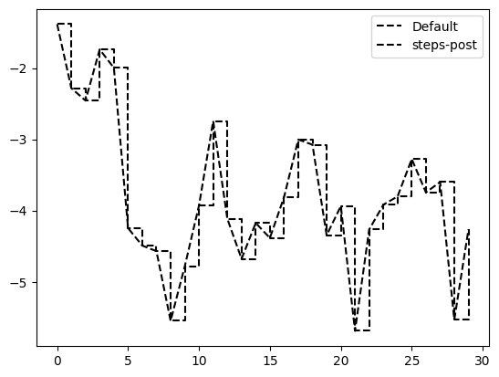
Ticks, Labels, and Legends
ax.get_xlim([0, 10])help(plt.xlim)Help on function xlim in module matplotlib.pyplot:
xlim(*args, **kwargs)
Get or set the x limits of the current axes.
Call signatures::
left, right = xlim() # return the current xlim
xlim((left, right)) # set the xlim to left, right
xlim(left, right) # set the xlim to left, right
If you do not specify args, you can pass *left* or *right* as kwargs,
i.e.::
xlim(right=3) # adjust the right leaving left unchanged
xlim(left=1) # adjust the left leaving right unchanged
Setting limits turns autoscaling off for the x-axis.
Returns
-------
left, right
A tuple of the new x-axis limits.
Notes
-----
Calling this function with no arguments (e.g. ``xlim()``) is the pyplot
equivalent of calling `~.Axes.get_xlim` on the current axes.
Calling this function with arguments is the pyplot equivalent of calling
`~.Axes.set_xlim` on the current axes. All arguments are passed though.
Setting the title, axis labels, ticks, and tick labels
fix, ax = plt.subplots()
ax.plot(np.random.standard_normal(1000).cumsum());
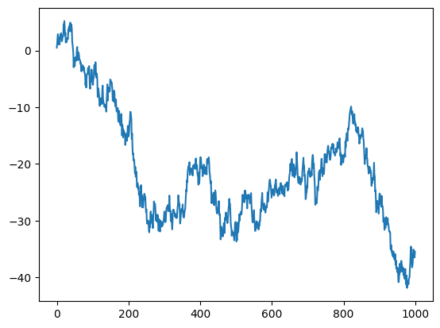
ticks= ax.set_xticks([0, 250, 500, 750, 1000])
labels = ax.set_xticklabels(['one', 'two', 'three',
'four', 'five'],
rotation = 30, fontsize=8)ax.set_xlabel('Stages')
Text(0.5, 1.0, 'My matplotlib plot')ax.set_title('My matplotlib plot')Text(0.5, 1.0, 'My matplotlib plot')plt.show()Adding legends
fig, ax = plt.subplots(3, 4)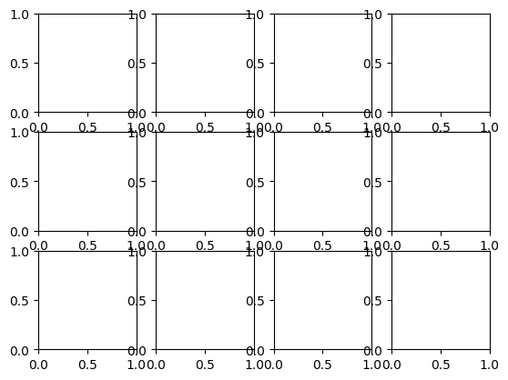
fig,ax = plt.subplots()
ax.plot(np.random.randn(1000).cumsum(), color = 'black',
label = 'one')
ax.plot(np.random.randn(1000).cumsum(), color = 'black',
linestyle = 'dashed')
ax.plot(np.random.randn(1000).cumsum(), color= 'black',
linestyle = 'dotted', )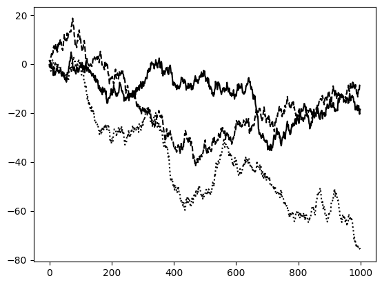
ax.legend()<matplotlib.legend.Legend at 0x20588a6e700>Annotations and Drawing on a Subplot
ax.text(x, y, 'Hello world!',
family = 'monospace', fontsize= 10)from datetime import datetime
fig, ax = plt.subplots()
rect = plt.Rectangle((0.2, 0.75), 0.4, 0.15, color = 'black', alpha=0.3)
circ = plt.Circle((0.7, 0.2),0.15, color = 'blue', alpha= 0.3)
pgon = plt.Polygon([[0.15, 0.15], [0.35, 0.4], [0.2, 0.6]],
color = 'green', alpha =0.5)
ax.add_patch(rect)
ax.add_patch(circ)
ax.add_patch(pgon)<matplotlib.patches.Polygon at 0x20588b71a60>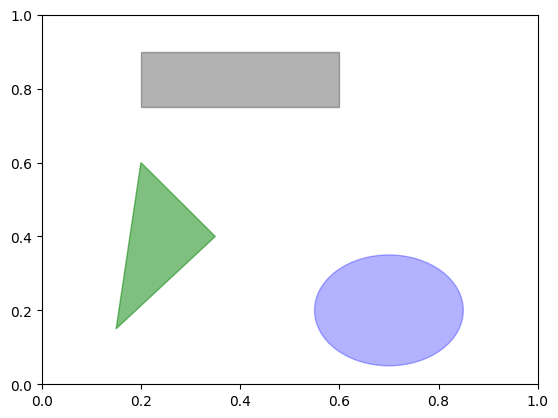
Saving photos to file
fig.savefig('figpath.svg')fig.savefig('figpath.png', dpi=400)Matplotlib configuration
plt.rc('figure', figsize = (10, 10))plt.rc('font', family= 'monospace', weight = 'bold', size= 8)Plotting with pandas and seaborn
Line plots
s = pd.Series(np.random.standard_normal(10).cumsum(),
index = np.arange(0, 100, 10))
s.plot()<Axes: >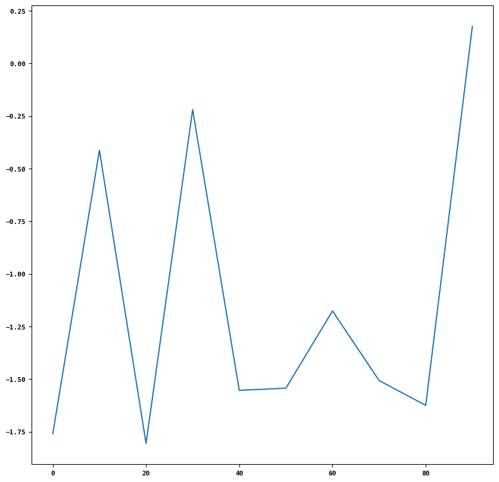
# to know more about plot method types
help(pd.Series.plot)df = pd.DataFrame(np.random.standard_normal((10,4)).cumsum(0),
columns = ['A', 'B', 'C', 'D'],
index = np.arange(0, 100, 10))
plt.style.use('grayscale')
df.plot()<Axes: >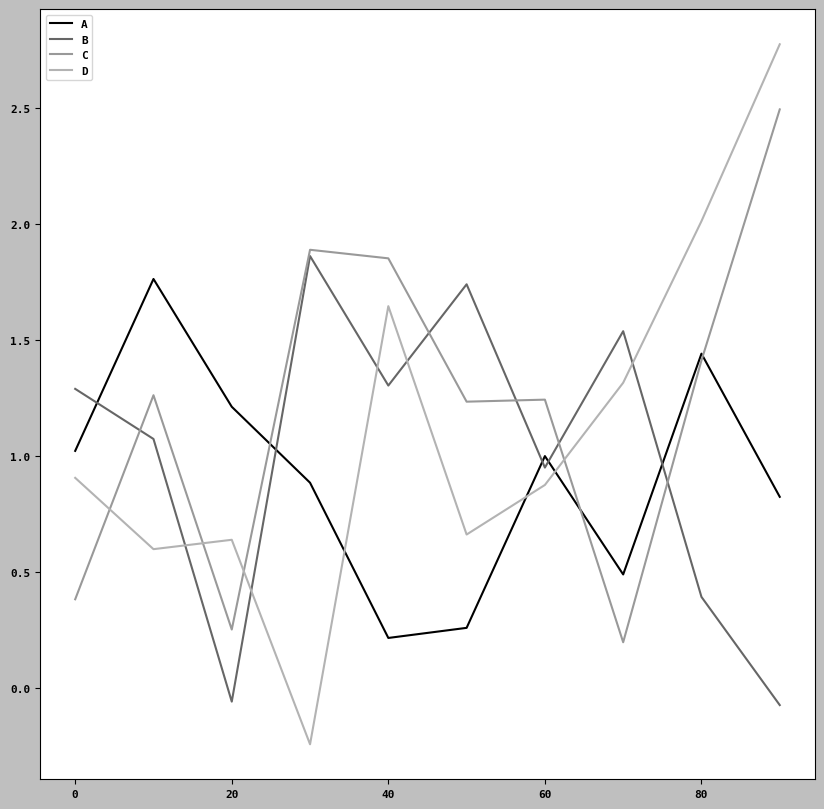
Bar Plots
fig, axes = plt.subplots(2, 1)
data = pd.Series(np.random.uniform(size=11),
index=list('adafdfdhfdf'))
data.plot.bar(ax = axes[0], color= 'black', alpha=0.7)
data.plot.barh(ax= axes[1], color= 'black', alpha= 0.7)<Axes: >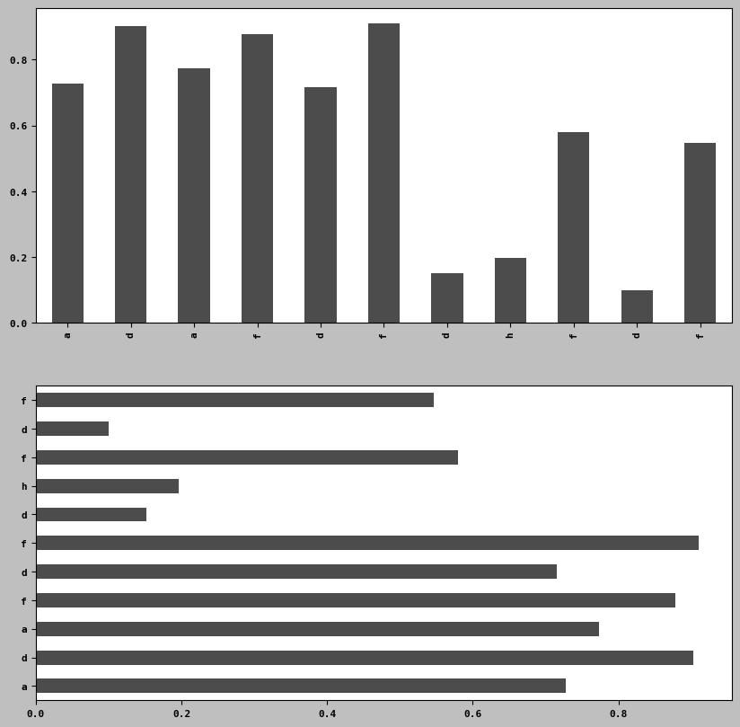
df2 = pd.DataFrame(np.random.uniform(size=(6,4)),
index = ['one', 'two', 'three', 'four', 'five', 'six'],
columns =pd.Index(['A', 'B', 'C', 'D'], name= 'Kunal'))
df2| Kunal | A | B | C | D |
|---|---|---|---|---|
| one | 0.260658 | 0.536198 | 0.754708 | 0.788162 |
| two | 0.558069 | 0.885258 | 0.726874 | 0.747412 |
| three | 0.731644 | 0.476325 | 0.688620 | 0.529862 |
| four | 0.536672 | 0.681522 | 0.509112 | 0.143861 |
| five | 0.188829 | 0.099173 | 0.050697 | 0.323006 |
| six | 0.521520 | 0.208836 | 0.807558 | 0.411876 |
df2.plot.bar()<Axes: >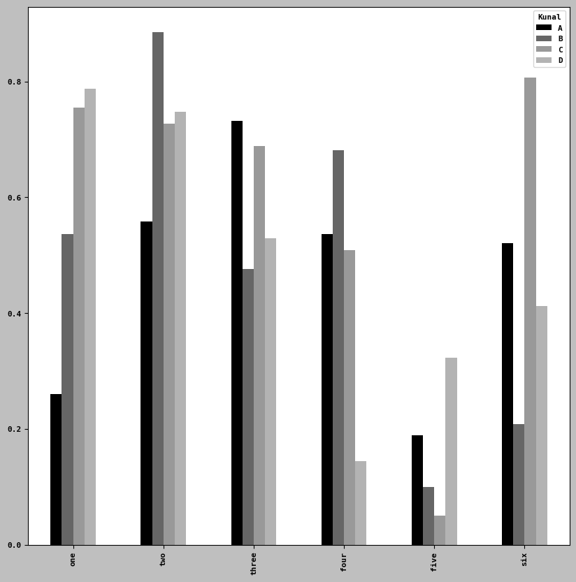
df2.plot.barh(stacked=True, alpha=0.5)<Axes: >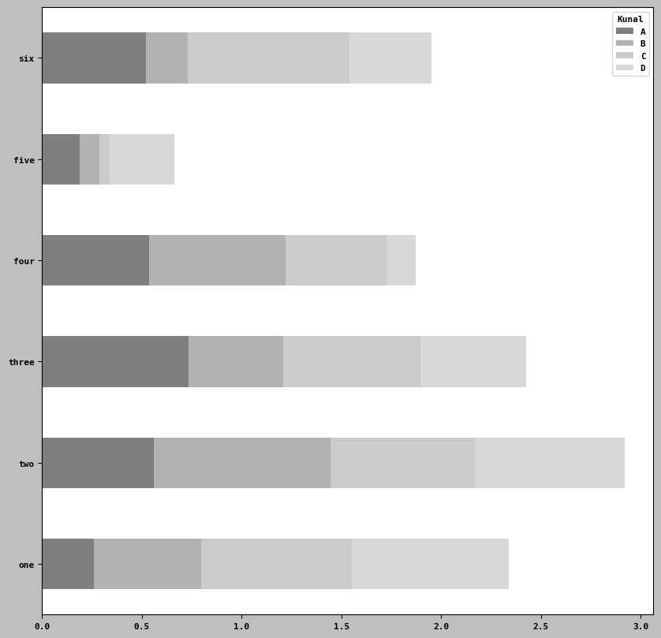
iris = pd.read_csv(r"E:/pythonfordatanalysis/semainedu26fevrier/iris.csv")
iris.head()| Id | Sepal Length (cm) | Sepal Width (cm) | Petal Length (cm) | Petal Width (cm) | Species | |
|---|---|---|---|---|---|---|
| 0 | 1 | 5.1 | 3.5 | 1.4 | 0.2 | Iris-setosa |
| 1 | 2 | 4.9 | 3.0 | 1.4 | 0.2 | Iris-setosa |
| 2 | 3 | 4.7 | 3.2 | 1.3 | 0.2 | Iris-setosa |
| 3 | 4 | 4.6 | 3.1 | 1.5 | 0.2 | Iris-setosa |
| 4 | 5 | 5.0 | 3.6 | 1.4 | 0.2 | Iris-setosa |
iris.tail()
#len_wd = pd.| Id | Sepal Length (cm) | Sepal Width (cm) | Petal Length (cm) | Petal Width (cm) | Species | |
|---|---|---|---|---|---|---|
| 145 | 146 | 6.7 | 3.0 | 5.2 | 2.3 | Iris-virginica |
| 146 | 147 | 6.3 | 2.5 | 5.0 | 1.9 | Iris-virginica |
| 147 | 148 | 6.5 | 3.0 | 5.2 | 2.0 | Iris-virginica |
| 148 | 149 | 6.2 | 3.4 | 5.4 | 2.3 | Iris-virginica |
| 149 | 150 | 5.9 | 3.0 | 5.1 | 1.8 | Iris-virginica |
print(iris.columns)Index(['Id', 'Sepal Length (cm)', 'Sepal Width (cm)', 'Petal Length (cm)',
'Petal Width (cm)', 'Species'],
dtype='object')count = pd.crosstab(iris['Sepal Length (cm)'], iris['Sepal Width (cm)'])count2 = count.reindex(index=['length', 'width', ])count2| Sepal Width (cm) | 2.0 | 2.2 | 2.3 | 2.4 | 2.5 | 2.6 | 2.7 | 2.8 | 2.9 | 3.0 | ... | 3.4 | 3.5 | 3.6 | 3.7 | 3.8 | 3.9 | 4.0 | 4.1 | 4.2 | 4.4 |
|---|---|---|---|---|---|---|---|---|---|---|---|---|---|---|---|---|---|---|---|---|---|
| Sepal Length (cm) | |||||||||||||||||||||
| length | NaN | NaN | NaN | NaN | NaN | NaN | NaN | NaN | NaN | NaN | ... | NaN | NaN | NaN | NaN | NaN | NaN | NaN | NaN | NaN | NaN |
| width | NaN | NaN | NaN | NaN | NaN | NaN | NaN | NaN | NaN | NaN | ... | NaN | NaN | NaN | NaN | NaN | NaN | NaN | NaN | NaN | NaN |
2 rows × 23 columns
Histogram and Density plots
iris['Sepal Length (cm)'].plot.hist(bins= 100)<Axes: ylabel='Frequency'>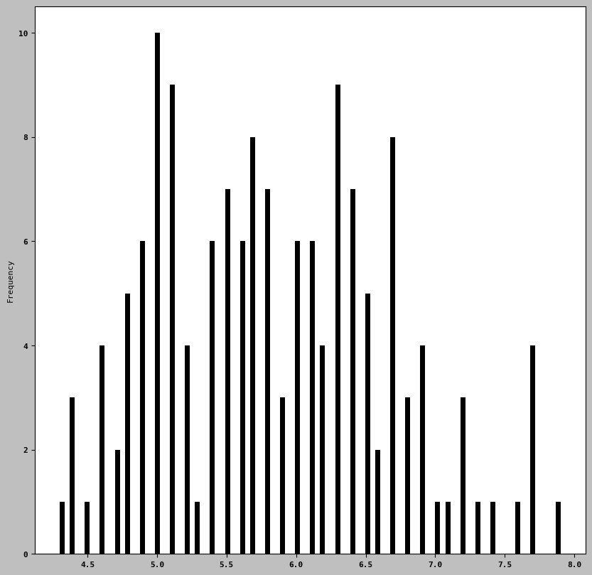
iris['Sepal Length (cm)'].plot.density()<Axes: ylabel='Density'>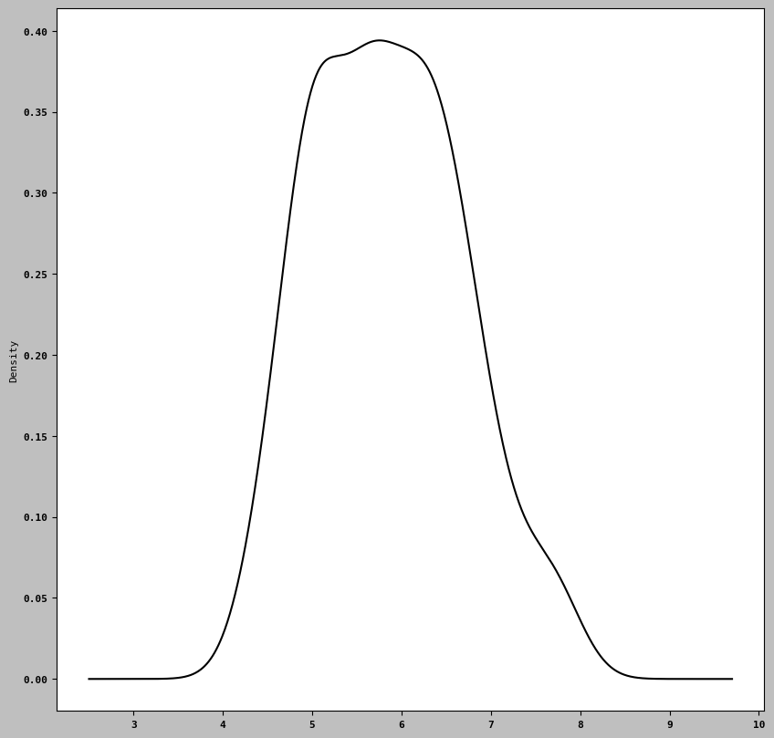
! pip install seabornimport seaborn as snscomp1 = np.random.standard_normal(200)
comp2 = 10 + 2 * np.random.standard_normal(200)
values = pd.Series(np.concatenate([comp1, comp2]))
sns.histplot(values, bins= 100, color = 'black')<Axes: ylabel='Count'>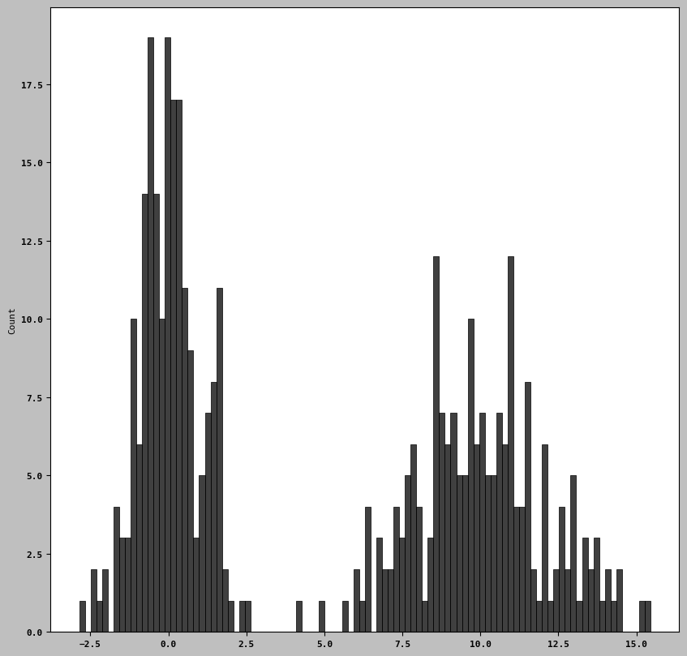
Scatter or point plots
iris.head()| Id | Sepal Length (cm) | Sepal Width (cm) | Petal Length (cm) | Petal Width (cm) | Species | |
|---|---|---|---|---|---|---|
| 0 | 1 | 5.1 | 3.5 | 1.4 | 0.2 | Iris-setosa |
| 1 | 2 | 4.9 | 3.0 | 1.4 | 0.2 | Iris-setosa |
| 2 | 3 | 4.7 | 3.2 | 1.3 | 0.2 | Iris-setosa |
| 3 | 4 | 4.6 | 3.1 | 1.5 | 0.2 | Iris-setosa |
| 4 | 5 | 5.0 | 3.6 | 1.4 | 0.2 | Iris-setosa |
iris2 = iris[['Sepal Length (cm)', 'Sepal Width (cm)', 'Petal Length (cm)',
'Petal Width (cm)']]trans_iris2 = np.log(iris2).diff().dropna()trans_iris2.tail()| Sepal Length (cm) | Sepal Width (cm) | Petal Length (cm) | Petal Width (cm) | |
|---|---|---|---|---|
| 145 | 0.000000 | -0.095310 | -0.091808 | -0.083382 |
| 146 | -0.061558 | -0.182322 | -0.039221 | -0.191055 |
| 147 | 0.031253 | 0.182322 | 0.039221 | 0.051293 |
| 148 | -0.047253 | 0.125163 | 0.037740 | 0.139762 |
| 149 | -0.049597 | -0.125163 | -0.057158 | -0.245122 |
using regplot method to make scatter plots
ax = sns.regplot(x= "Petal Length (cm)", y = "Petal Width (cm)", data= trans_iris2)
#ax.title("Change in log (Petal Length (cm)) length versus log (Petal Width (cm)) width ")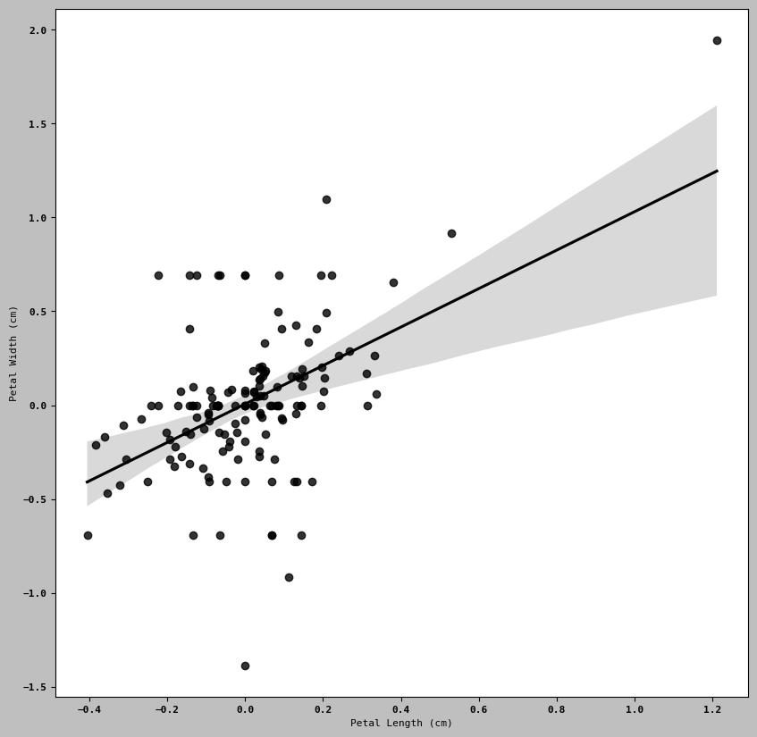
sns.pairplot(trans_iris2, diag_kind= 'kde', plot_kws={'alpha': 0.2} )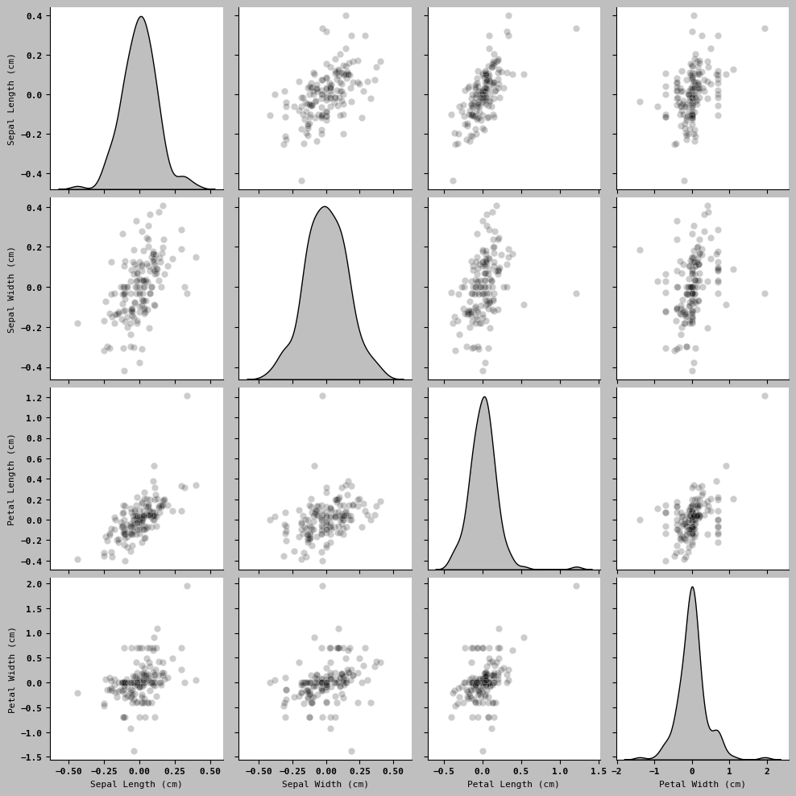
Facet Grids and Categorical Data
- catplots
sns.catplot(x = 'Petal Length (cm)', y= 'Petal Width (cm)',
data = iris2[iris2.Petal Length (cm) < 0.5])SyntaxError: invalid syntax (3918704872.py, line 2)# renaming columns
df3 = df.rename(columns={
'Sepal Length (cm)' : 'sepal_lengh',
'Sepal Width (cm)': 'sepal_width_1',
'Petal Length (cm)': 'petal_length',
'Petal Width (cm)' : 'petal_width_2',
})df3| A | B | C | D | |
|---|---|---|---|---|
| 0 | 1.023099 | 1.290412 | 0.383457 | 0.906869 |
| 10 | 1.764172 | 1.074479 | 1.263072 | 0.599487 |
| 20 | 1.213259 | -0.057754 | 0.253086 | 0.639868 |
| 30 | 0.885836 | 1.862965 | 1.889980 | -0.241599 |
| 40 | 0.216726 | 1.304783 | 1.853073 | 1.646926 |
| 50 | 0.260248 | 1.741218 | 1.235233 | 0.662542 |
| 60 | 1.000675 | 0.951141 | 1.243977 | 0.876234 |
| 70 | 0.490475 | 1.539086 | 0.198194 | 1.316823 |
| 80 | 1.442176 | 0.393618 | 1.413128 | 2.013297 |
| 90 | 0.825008 | -0.072619 | 2.495192 | 2.775830 |
sns.catplot(x = 'Sepal Length (cm)', y= 'Sepal Width (cm)',
kind = 'box',
data = iris2)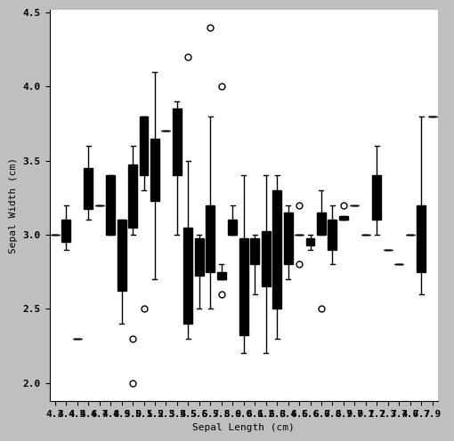